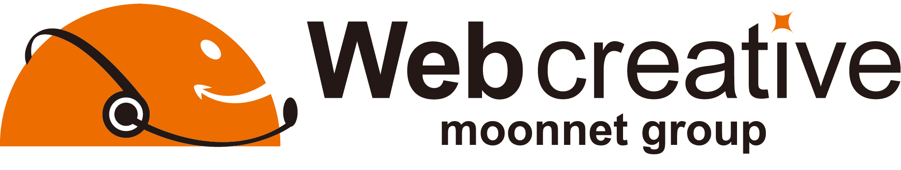
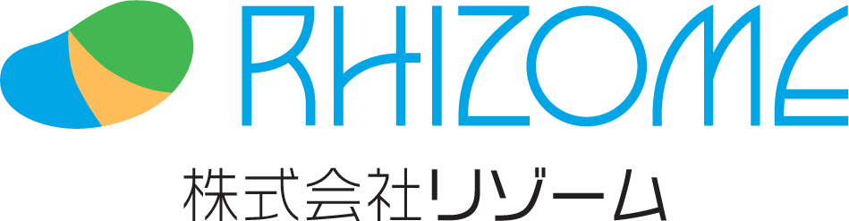
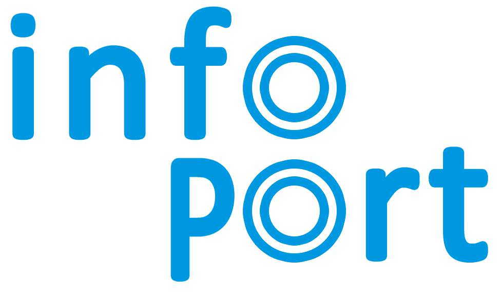

こんにちは世界！
Rails GirlsがOkayamaにやってきました！
Ruby on Railsのすてきな世界を私達と一緒に体験しましょう！
第1回 Rails Girls Okayamaの参加者を募集します。
２日間のワークショップとなります。
無料のワークショップですので、お気軽にご参加ください。
11月30日(月)までにこちらから応募してください。
Hello world!
Rails Girls comes to Okayama! During the free two-day workshop we'll dive into the magical world of Ruby on Rails.
Application was closed at the 30th November. Thank you!
概要 コーチに教えてもらいながらアプリを作成します。継続して学習していくためのコミュニティを形成します。
必要なもの 自分のノートパソコン、やる気とキラリと光るイマジネーションを持ってきてください！
コーチ募集 Rails Girls Okayamaではコーチを募集しています。こちらからお問い合わせください。
| 18:00 - 20:00 |
インストール・ ディまずは、参加者同士、お互いに知り合いになりましょう。ご自分のノートパソコンをお持ちください。 それぞれのパソコンにRubyとRailsをインストールし、Rubyプログラミングの最初の一歩をコーチとともに始めてみましょう。 |
|---|
| 9:00 - 10:00 |
レジストレーション、コーヒー金曜日にRuby on Railsのインストールトラブルがあれば、朝のうちに解決しておきましょう。 金曜日にすべてうまく行ったひとは参加しなくてもOKです。9:30ごろからのんびりきてください。 |
|---|---|
| 10:00 - 10:10 |
開会一日の流れの説明。オーガナイザーから一言。 |
| 10:10 - 10:40 |
RubyとRailsの説明座学 「RubyとRailsのおいしい使い方」 - つじた さとみさん - |
| 10:40 - 12:00 |
ワークショップ ー ウェブアプリ構築はじめてのウェブアプリにトライしてみよう！ |
| 12:00 - 13:00 | ランチ |
| 13:00- 13:30 |
スポンサーによるライトニングトーク |
| 13:30 - 17:00 |
ワークショップ自分流のウェブアプリに変えてみよう！ |
| 17:00 - 17:30 |
休憩 |
| 17:30 - 20:00 |
アフター・パーティ参加者、コーチ、スタッフによるパーティです。ワークショップで聞き損ねたことや RubyやRailsのこと、ステップアップの方法など、コーチに気軽に質問してみましょう。 |
参加費はどのくらいかかりますか？
無料です。申し込むときにはわくわくした気持ちだけあればいいです。
どのような人が参加するのでしょうか？
コンピュータを使ったことがある女性ならだれでも参加できます。これまでに開催されたRails Girlsイベントには様々な年齢の女性がやってきました。ご自分のノートパソコンをお持ちください。
男性も参加できますか？
参加できます。ただし、必ずウェブアプリを作りたがっている女性と一緒に参加してください。申し込み人数が多い場合はお断りすることがあります。
プログラミングの経験があります。手伝うことはできますか？
はい、できます。コーチ募集についてはこちらをご覧ください。
土曜日のみの参加は可能でしょうか？
はい、可能です。その場合は、土曜日の9時からインストールを行っていただきます。
他言語でのプログラミングの経験があり、初心者ではないのですが参加可能でしょうか？
参加できますが、経験者には少し物足りない可能性があります。
一度もプログラミングの経験がないのですが大丈夫でしょうか？
はい、大丈夫です。そんなあなたのためにRails Girlsがあります。困ったことがあっても親切なコーチが助けてくれるので、安心してご参加ください。
何か質問があればこちらにご連絡ください。
railsgirls.okayama@gmail.com
締め切り:
11月30日(月) 23:00
参加合否結果のご連絡:
12月7日(月)までに順次連絡します
会場:
就実大学・就実短期大学 S館416号室地図
岡山県岡山市中区西川原１丁目６−１
Rails Girls Okayama は以下のすばらしいパートナーとの共同開催です。
ご支援いただけるパートナーを募集しております。下記のアドレスにご連絡ください。資料をお送りいたします。
railsgirls.okayama@gmail.com
就実大学・就実短期大学 は、1904年に創業され、「去華就実」を創業理念としています。人文科学部、薬学部、教育学部と経営学部の４つの学部のある岡山の私立の総合大学です。経営学部は2014年4月に開講されました。岡山や日本のビジネスのリーダーによる講義、世界のベンチャーのメッカのシリコンバレーからのインターネットを活用した講義などのユニークなプログラムがあります。
 Okayama.rbは、岡山でRubyやRuby on Railsを勉強する地域コミュニティです。ゆるく勉強会を開いているので初心者の人やRubyをこれから始めようと思っている方も気軽に参加ください。
Okayama.rbは、岡山でRubyやRuby on Railsを勉強する地域コミュニティです。ゆるく勉強会を開いているので初心者の人やRubyをこれから始めようと思っている方も気軽に参加ください。
 岡山大学テクノロジーラボは、Web, スマホアプリ、IoTなどの分野に興味があり、またそれらに携わりたい学生や実際に作りたい学生などを募集しています！
岡山大学テクノロジーラボは、Web, スマホアプリ、IoTなどの分野に興味があり、またそれらに携わりたい学生や実際に作りたい学生などを募集しています！
 クレオフーガは、音楽クリエイターが活躍する場を創造することを理念とし、音楽共有サービス「クレオフーガ」、音源販売サービス「オーディオストック」を運営しています。
クレオフーガは、音楽クリエイターが活躍する場を創造することを理念とし、音楽共有サービス「クレオフーガ」、音源販売サービス「オーディオストック」を運営しています。
株式会社DIGITALJETは、WEBサイト制作やWEBデザイン、業務用アプリケーション（iOS、PHP、Ruby on Rails）開発などをトータルプロデュースするデジタル・クリエイティブ・カンパニーです。デザインを大切にし、機能的で気持ちよいソフトウェアを社会に提供します。
 株式会社spice lifeは、ECを通して世の中に笑顔を増やすサービスを作ります。spice lifeで開発するのはECの分野、ちょっと変わった、ちょっと新しい、ちょっと世の中を良くするようなECです。もちろんRailsで開発しています。オリジナルTシャツ作成サービスTMIXは各地のRailsGirlsのスタッフTシャツ作成もしています。
株式会社spice lifeは、ECを通して世の中に笑顔を増やすサービスを作ります。spice lifeで開発するのはECの分野、ちょっと変わった、ちょっと新しい、ちょっと世の中を良くするようなECです。もちろんRailsで開発しています。オリジナルTシャツ作成サービスTMIXは各地のRailsGirlsのスタッフTシャツ作成もしています。
 GitHubは、ソフトウェアの共同開発をするための最高の環境を開発・提供しています。1000 万人以上のユーザーが友だち、同僚、クラスメートと、時にはまったく知らない人とでさえ、コードなどを共有して素晴らしいプロジェクトを行っています。
GitHubは、ソフトウェアの共同開発をするための最高の環境を開発・提供しています。1000 万人以上のユーザーが友だち、同僚、クラスメートと、時にはまったく知らない人とでさえ、コードなどを共有して素晴らしいプロジェクトを行っています。
ミーニューは好みや栄養を考えた最長１週間の献立を自動作成するサービス。忙しい毎日、家族のために頑張る主婦の皆さんを手助けしたいとの想いからミーニューは生まれました。毎日忙しい皆さんの時間と心にゆとりを、食卓に健康的なおいしさを。ミーニューは、毎日の献立作りから家族の幸せを応援します。ドコモ・イノベーションビレッジ２期「グランプリ」「オーディエンス賞」ダブル受賞。
ウェブクリエイティブ株式会社は、Web制作でネットの可能性と発展を追及する会社です。WebデザインからWebシステムまで、社員全員が制作者です。今期は「経済力のある女性を増やす」をスローガンに、『私たちの可能性を証明する』ことに果敢に挑戦したいと考えています。
株式会社リゾームは主にショッピングセンター向けのパッケージソフトウェア企画・開発・販売を行っている会社です。高い技術力でお客様に情報活用環境を提供し、共に成長し続けたいと考えています。
インフォポート合同会社はクラウドシステムで仕事をカンタンにして、「趣味」「恋愛」「子育て」の時間をつくります(^^) あこがれ社長プロジェクトにより、「ご縁」による就職を増やし、岡山を愛するプログラマーが活躍できる経営環境をつくります(^o^)／
 岡山大学工学部情報系学科乃村研究室では、研究の一環として、Railsを使ったWebアプリケーションを開発しています！Railsに限らず、常に新しい技術を追いかけ、積極的に研究や開発に取り入れています。今回のRails Girls Okayamaでは、コーチとして4名の学生がお手伝いしています。
岡山大学工学部情報系学科乃村研究室では、研究の一環として、Railsを使ったWebアプリケーションを開発しています！Railsに限らず、常に新しい技術を追いかけ、積極的に研究や開発に取り入れています。今回のRails Girls Okayamaでは、コーチとして4名の学生がお手伝いしています。
 Makoto Henmi
Makoto Henmi Kazuhisa Yamamoto
Kazuhisa Yamamoto Takuto Tsuchiya
Takuto Tsuchiya Yuko Ikeda
Yuko Ikeda